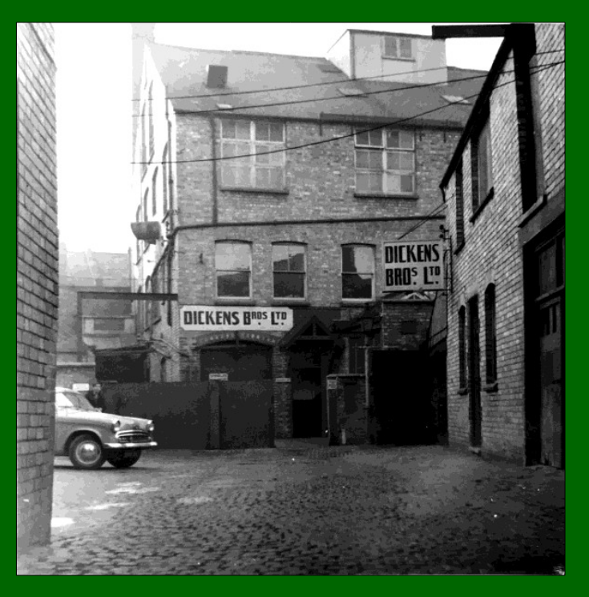
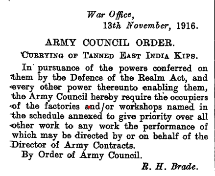
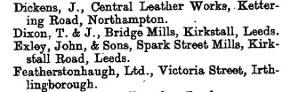

While Kennedy O’Brien might have been one of the few leathermen in all of Ireland, Reginald Dickens (also born in 1888) was one of several in his own family.1 They ran Dickens Brothers Ltd in Northampton, a city which was firmly at the centre of the leather and footwear industry in Britain and indeed the world. However, with three older brothers ahead of him, two of them a full decade older, Reginald’s best chance of individual success perhaps lay in pastures abroad.
Grandfather Dickens was a shoe maker in the village of Walgrave, about ten miles outside Northampton, and his son John Dickens, born in 1860, became a leather merchant and a master currier during the 1880s and 90s. Hebegan leather production in the family workshop, but also employed a number of other workers operating from their own backyard workshops. Such small-scale operations had also been common in Ireland in the nineteenth century, but instead of consolidating into larger enterprises in harmony with technological improvements, as they did in Britain, the Irish industry dwindled out of existence thanks in part to the ravaging effects of the famine and the ever-increasing export of livestock ‘on the hoof’ from Ireland to Britain.
The Dickens family were of the Baptist persuasion and such non-conformists were disqualified from going to the main English universities. These groups focused on industry and in Ireland this is most familiar among Quaker families such as the Jacobs, the Bewleys and the Odlums. John Dickens doubled up as a lay preacher and was deeply involved in the local Baptist church. He was strict and particularly against the pernicious effects of alcohol. However, he was not shy of work and, being entrepreneurial, he was bound for the nearby city with its shiny opportunities. By 1897, now aged 37, he had established a successful leather business on Victoria St, in the city’s boot and shoe district, where many non-conformists congregated. In 1899 he bought a row of six cottages, had them demolished, and had a purpose-built factory in their place, helped a total of £4000 in loans, split between the bank and his father-in-law, a Mr Pebody. The factory was operational the following year but, sadly, John died in 1903. Like Michael J Casey, he had five sons and one daughter. The eldest two, Arnold and Alfred, took over the business, prospered, and by 1908 they had secured trade deals in the United States, Canada and other Commonwealth states, although it is not known if they had dealings within Ireland.
When his father died, Reginald was still only a lad of 14, attending Northampton Grammar School. It is not clear exactly when he joined the family business, but it is most likely that he spent much of the next decade working there before the war broke out. He spent the war years in active service, and according to his service numbers, he would have been a reservist in England before the war even began, so he would have been one of the first on the battlefield. He was a field driver for the Royal Field Artillery, a job that involved driving up to six horses as a time as they lugged artillery across the battlefield. https://www.youtube.com/watch?v=MCsyd-FfGhk


Meanwhile, the factory was contracted by the government to produce leather for the army. Reginald survived the war and rejoined the family business in 1919, gaining plenty more experience, before eyeing up the emerging opportunities in the neighbouring Irish Free State. It is well worth noting that while Dickens Leather in Dungarvan had over 100 men working, there were only about 50 men on the floor in Northampton, before mechaninisation in the 1950s reduced the need for so many manual workers. This figure also gives us some context for how large the Dungarvan operation actually was. Furthermore, in the scramble for business contracts in the puritanical – or family-oriented – Irish Free State, Dickens Bros’ habit of employing only men was seen by the Irish ministry as a positive.
Dickens Leather Bros, at it became known in the 1920s, would stay operational, and in the family, until 2019, under the watch of Reginald’s nephew Brian (1938-2025). After it closed, he claimed the business was the longest running finished leather manufacturing business in Northampton, and perhaps the oldest in the UK.
After Dickens Bros Ltd was dissolved, it was sold to the Elsevier Group for residential development. Firstly, however, an archaeological report, was commissioned and it includes quite a bit of history of the business.
https://archaeologydataservice.ac.uk/archiveDS/archiveDownload?t=arch-1974-1/dissemination/pdf/souterra1-382056_1.pdf
Frank Dickens, the youngest of the five brothers, became a distinguished chemist and his life was reviewedby The Royal Society.↩︎https://www.thegazette.co.uk/London/issue/29870/page/12342/data.pdf↩︎